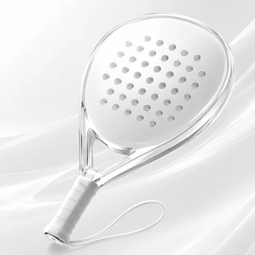
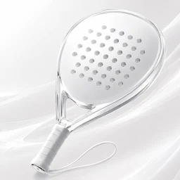
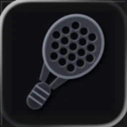
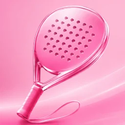
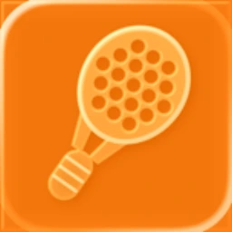
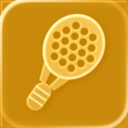
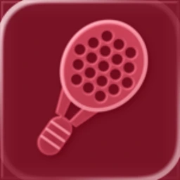
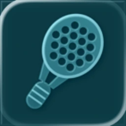

Tu Watch es el marcador en pista.
Las zonas grandes registran cada punto, la información de saque permanece visible y deshacer recupera marcador y servicio incluso al cruzar un juego, set o tiebreak. Sin Watch, puedes contar en el iPhone.

Nativa en iPhone + Apple Watch
Padelly es una app local para contar y seguir partidos de pádel en iPhone y Apple Watch. Configura jugadores y reglas en el iPhone, cuenta puntos desde la muñeca y consulta después el historial.

Padelly de un vistazo
Pensada para la pista
Elige individual o dobles, jugadores, formato y primer equipo al saque, o recupera una configuración reciente con Inicio rápido.
Lo que importa en pista
Padelly se ocupa de los detalles entre puntos para que sigas mirando al otro lado de la red.
Las zonas grandes registran cada punto, la información de saque permanece visible y deshacer recupera marcador y servicio incluso al cruzar un juego, set o tiebreak. Sin Watch, puedes contar en el iPhone.
Elige Partido de club alemán, Partido clásico completo, Partido rápido, Partido de mini set o Mejor de 3 mini sets. Los formatos de lanzamiento aplican ventaja o punto de oro y el desempate correspondiente.

Tu juego, guardado
Consulta resultados, sets, juegos, puntos y duración en el historial local. La base de jugadores muestra partidos disputados, victorias y la última fecha de juego.
Fitness es opcional
Con tu permiso, Padelly puede guardar el partido como entrenamiento de Apple Fitness y mostrar datos disponibles de frecuencia cardiaca y energía activa. Todo el marcador funciona sin Fitness.

A tu manera
Elige apariencia del sistema, clara u oscura, combínala con tres paletas de equipo y escoge un icono alternativo para la pantalla de inicio del iPhone.

Elige el icono que mejor encaje contigo.

Classic White · Principal
Midnight Black
Rose Pop
Court Orange
Trophy Gold
Bordeaux Red
Deep PetrolSin cuenta, inicio de sesión, publicidad, analítica, seguimiento ni nube propia. Padelly guarda partidos y jugadores en local; la copia privada opcional de iCloud está diseñada actualmente para un iPhone.
Leer la política de privacidad →Mantén el partido en marcha con Padelly en iPhone y Apple Watch.